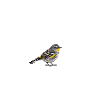
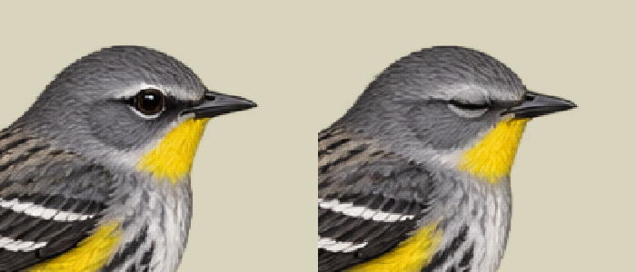

Current adult male Audubon/cool-season source: awake and blink. Both remain right-profile; neither is a toward-viewer look. Each96-square output is displayed at its own119.35135135135135CSS/world canvas, density37/46. The visible awake bird is46world units wide. Existing foot/perch support is source paint only, not physically admitted.

Enlarged source head inspection, not yard scale:

Prompt is prepared but NOT SUBMITTED. No generated drawing, runtime binding, measured yaw or biological timing claim. A future call needs coordinator GO after the Crow perch checkpoint.